Phn_output for Inkscape Specification
日本語(Japanese), English
Back to Home
Contents
Disclaimer
This script is checked with Inkscape 1.0.0.
Please use this script with no warranty.
NOTE: There are source files in zip file.
Setting
Move [phn_output.py] and [phn_output.inx] -- which are included in zip file --
into [extensions] folder.
You'll find [extensions] folder at following path
Windows:
C:\Program Files\Inkscape\share\extensions
Mac OS:
~/.config/inkscape/extensions
otherwise,
Contents/Resources/extensions
How to use
Click [Save as... ] and select [Algodoo scene (*.phn)] for file type.
NOTE: You need to save as svg file if you also need a svg file.
SVG <--> Algodoo table
| SVG elements |
Algodoo objects |
Description | |
|---|---|---|---|
| Size | 1 inch (in) | 1 meter (m) | Inkscape's 1 inch equivalents Algodoo's 1 meter. I've created example.svg, please copy and use it. Advise for Inkscape beginner: Grid feature can be toggled by [View]-[Grid] (shortcut-key: #) |
| Circles |  |
 |
Perfect circles will be converted into Circle. "Draw circle cake" option is off for the circles. NOTE: SVG editor (except Inkscape) can be generated circle shaped paths which cannot be detect as circles. The shapes will be handled as Polygons. |
| Ellipses | 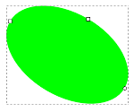 |  |
Ellipses will be converted into Polygons. |
| Rectangles |  |
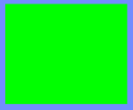 | Rectangles which is created by Inkscape's rectangle tool will be converted into Box. |
| Rounded rectangles |
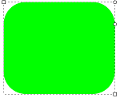 | 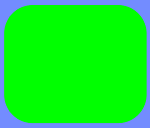 | Rounded rectangles will be converted into Polygons. |
| Stars |  |
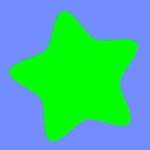 | Stars will be converted into Polygons |
| Star tool | 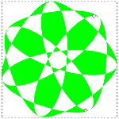 |  |
Star tool can generate complex shapes easily. The shapes will be converted into Polygon. |
| Spirals(1) | 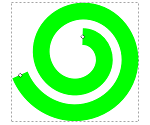 |  |
The shape converted from spiral may be not what you intended. |
| Spirals(2) |  |
 |
Polygon which has spiral shaped surface will be created. In this case, the end and start points will be connected automatically (red line in the picture). |
| Spirals (Stroke to path) |
 |
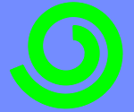 | How to convert spiral correctly: Select the shape and click [Path] - [Stroke to path] (shortcut-key: Ctrl+Alt+C) |
| Text | Text cannot be handled, yet. | ||
| Text shaped path |
 |
 |
Text shaped path can be converted into Polygons How to convert text to path: Select text and click [Path] - [Object to path] (shortcut-key: Shift+Ctrl+C) |
| 3D boxs |  |
 |
Here you are! |
| Planes | 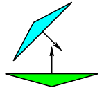 |  |
With this specification, SVG's polyline elements is converted into Planes. Please copy and use one in example.svg |
| Springs |  |
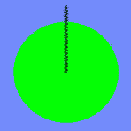 | Segments will be converted into Springs. Default damping factor is 0.1 for the springs. Adjust it by yourself. NOTE: If the path has more than three vertex, will be converted into polygon even if the path looks like segment. |
| Hinges |  |
 |
Circles with "Mid Markers" (marker-mid attribute), will be converted into Hinges. The mid marker type won't affect to the result. |
| Motors | 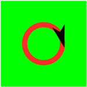 | 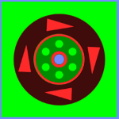 | Circles with "Start Markers" (marker-start attribute), will be converted into Motors. The start marker type won't affect to the result. NOTE: Motor is a kind of hinge, but you don't have to set Mid marker for motor (Start markers is enough for motor). |
| Tracers | 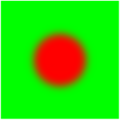 |  |
Circles with filter attribute, will be converted into Tracers. The filter type won't affect to the result. You can set filter as Blur |
| LaserPens |  |
 |
Segments with "End Makers" (marker-end attribute), will be converted into Laserpens. The end marker type won't affect to the result. |
| Thruster | 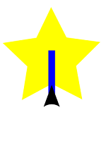 | 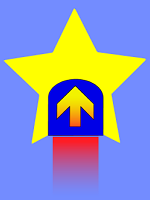 | Segments with "Start Makers" (marker-start attribute), will be converted into Thrusters. The start marker type won't affect to the result. |
| SVG elements |
Algodoo objects |
Description |
That's all! Thanks for reading!
This HTML is described by Tatt (tatt61880) ---- Twitter: @tatt61880